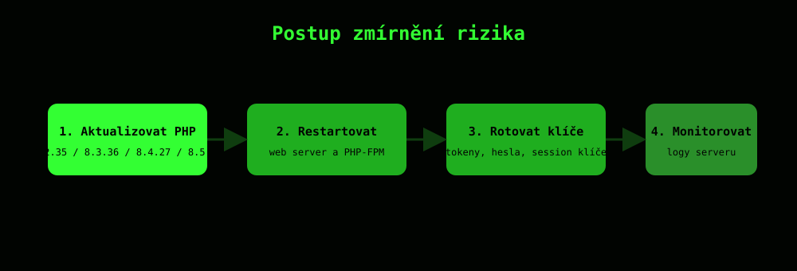

Ochrana
Jediná úplná oprava je aktualizace PHP. Dočasná opatření, třeba pravidla ve WAF, riziko jen zmírní a útok úplně nezastaví.

Doporučený postup
- Aktualizuj PHP na opravenou verzi: 8.2.35, 8.3.36, 8.4.27 nebo 8.5.12. Pro doběhlé verze 7.4, 8.0 a 8.1 existují jen zdrojové patche bez oficiálních binárek.
- Restartuj web server a PHP-FPM, protože poškozený stav může přežívat v běžících procesech i po nahrání nových souborů.
- Zkontroluj konfiguraci
memory_limitapost_max_size: pokud jememory_limitmenší než zhruba čtyřnásobekpost_max_size, je server snadněji zneužitelný. - Pokud jsi exponovaný server nestihl záplatovat včas, rotuj hesla, API klíče a session klíče, protože mohly být před opravou kompromitované.
- Monitoruj logy a hledej hlášky typu
Allowed memory size… exhaustedkombinované sin Unknown on line 0, což značí útok ve fázi startu požadavku.
root@php2shell:~$ php -v
PHP 8.3.36 (cli) — opravená verze, build po 21. 10. 2026
Kdo je nejvíc ohrožen
Podle analýzy Mandiant jsou snáze zneužitelná nasazení přes Apache mod_php, naopak proti konfiguraci s PHP-FPM se dosud veřejné PoC exploity neukázaly jako plně funkční. Shadowserver napočítal v USA skoro 282 000 instancí PHP, které dosáhly konce podpory a záplatu vůbec nedostanou.